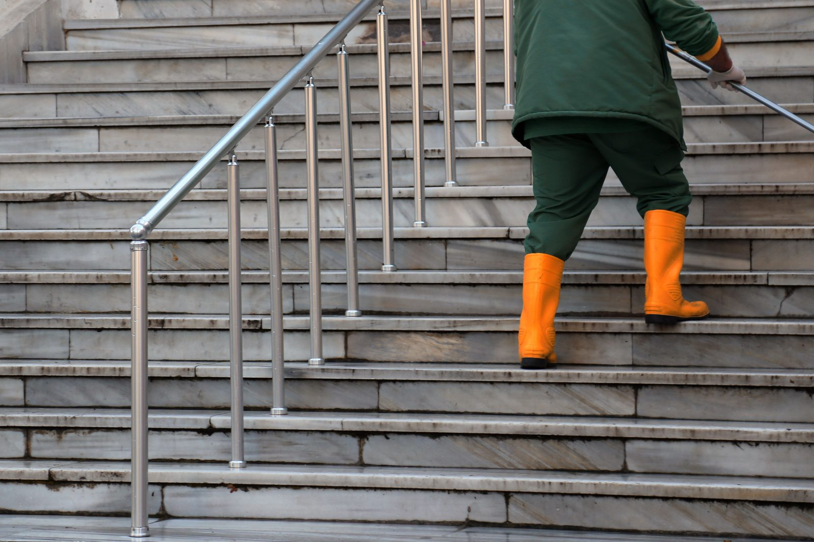

Antalya ev, ofis ve apartman temizliği
Konyaaltı, Muratpaşa ve Kepez’te eşyalı ev temizliği; çalışan ofis ve apartman ortak alanı. Kapsam net, malzeme ekiple.
01
 Ev temizliği
Ev temizliği
Daire ve müstakil evin içi. Periyodik (haftalık veya iki haftada bir) ya da tek sefer istenebilir. Taşınma sonrası, yaşamaya uygun dairelerde iç temizlik yapılır.
1+1 dairelerin çoğu 2–3 saatte biter. 2+1 ve 3+1 dairelerin çoğu 3–5 saat sürer. Balkon camı çok, ev uzun süredir kapalı ya da eşya fazlaysa süre uzar; bunu mesajda söyleriz, sürpriz bırakmayız.
Evde yapılanlar
- Yerlerin süpürülmesi ve silinmesi
- Mutfak tezgâhı, ocak yüzeyi, evye, dolap dışları
- Banyo, tuvalet, ayna
- Ulaşılabilen rafların ve açık yüzeylerin tozu
- Çöplerin toplanması
- Camın iç yüzeyi, ulaşılabilen kanatlarda


Ev temizliği
Neler dahil, neler değil
Antalya ev temizliği arayanların en çok sorduğu ayrım. Randevu öncesi net olsun diye yazıyoruz.
Dahil olanlar
- Zemin süpürme ve silme
- Mutfak tezgâhı, ocak yüzeyi, evye, dolap dışları
- Banyo, duş kabini içi, tuvalet, ayna
- Açık yüzey ve ulaşılabilen raf tozu
- Camın iç yüzeyi (ulaşılabilen kanatlar)
- Çöp toplama; malzeme ve ekipman ekiple
Dahil olmayanlar
- İnşaat / şantiye / moloz–alçı–boya kazıma
- Koltuk yıkama, halı yıkama, buharlı koltuk
- Dış cephe camı, vinç, bina dışı işler
- Dolap içi genel boşaltma (özellikle istenmedikçe)
- Ütü, yemek, çocuk / yaşlı bakımı
- Konyaaltı–Muratpaşa–Kepez dışı adresler
Plan
Tek sefer veya periyodik ev temizliği
Bazı evler ayda bir detay ister; bazıları haftalık düzen. İkisini de aynı kapsam çerçevesinde planlarız.
Periyodik planda ilk ziyaret biraz daha uzun sürebilir; sonraki ziyaretlerde süre evin durumuna göre kısalır. Yazlık / sezonluk dairelerde sezon başı tek sefer sık istenir.
Randevuda yazmanız yeterli
- İlçe ve mahalle
- Oda / banyo sayısı
- Eşyalı mı, taşınma sonrası mı
- Tek sefer mi, haftalık / iki haftada bir mi
- Tercih ettiğiniz gün aralığı
02
 Ofis temizliği
Ofis temizliği
Büro, muayene, emlak ofisi, küçük atölyenin ofis bölümü. Büro ve muayene gibi, düzenli kullanılan iş yerlerinde çalışırız.
Ekip, kapı müşteriye açıkken içeri girmez. Saat ya sabah açılıştan önce ya da akşam kapanıştan sonradır. Muratpaşa’daki Şirinyalı ve Güzeloba ofislerinde akşam 18.00 sonrası sık kullanılır; Kepez ve Konyaaltı için de aynı kural geçerlidir.
Ofiste yapılanlar
- Yerler
- Masa ve sehpa, evrak oynatılmadan
- Mutfak nişi, evye, çay ocağı
- Tuvalet ve lavabo
- Camın iç yüzeyi
- Çöp kovalarının boşaltılması


03
 Apartman temizliği
Apartman temizliği
Binanın ortak alanı. Daire içi ayrı randevudur; aynı gün istenirse iki iş olarak yazılır. Yönetim haftalık veya ayda iki kez plan isteyebilir.
Süre kat sayısına, asansör olup olmamasına ve merdivenin genişliğine bağlıdır. Kepez’deki yoğun konut sitelerinde merdiven işi, Konyaaltı’ndaki yazlık sitelerde ise sezon başı tek seferlik ortak alan temizliği daha sık istenir.
Ortak alanda yapılanlar
- Merdiven ve sahanlık
- Korkuluk
- Asansör kabini, kapı ve düğme çevresi
- Giriş holü ve paspas altı
- Ulaşılabilen cam içleri ve posta kutusu önü


SSS
Ev temizliği ve hizmet soruları
Kapsam, süre ve sınırlar — arama sorularına dürüst yanıt.
Antalya ev temizliği fiyatı ne kadar?
Sabit tarife yayınlamıyoruz. Oda–banyo sayısı, eşya durumu, tek sefer veya periyodik oluşu ücreti değiştirir. WhatsApp’ta bilgiyi yazın; rakamı mesajda netleştiririz.
Ev temizliği ne kadar sürer?
1+1 dairelerin çoğu 2–3 saatte, 2+1 ve 3+1 dairelerin çoğu 3–5 saatte biter. Uzun süredir temizlenmemiş veya çok eşyalı evde süre uzar; bunu randevuda söyleriz.
Detaylı ev temizliği ile rutin temizlik farkı nedir?
Rutin / periyodik ziyaret düzeni korur. Uzun süre kapalı kalmış veya taşınma sonrası dairede ilk iş daha uzun sürebilir; bunu “detaylı tek sefer” diye planlarız. Kapsam yine mutfak–banyo–zemin–toz–cam içidir.
Boş daire veya eşyasız ev temizliği yapıyor musunuz?
Daire yaşamaya uygun ve güvenliyse ev temizliği yapılır. Eşyasız dairede süre genelde kısalır. İnşaat artığı / molozlu şantiye alınmaz.
Cam ve ayna temizliği ev işine dahil mi?
Evet: ulaşılabilen camın iç yüzeyi ve banyo aynası. Dış cephe ve vinç işi yoktur.
Ofiste evraklara dokunulur mu?
Hayır. Masa üstü, siz özellikle istemedikçe toparlanmaz. Yer, tuvalet, mutfak nişi, çöp ve camın iç yüzeyi yapılır.
Taşınma veya tadilat sonrası daire temizlenir mi?
Daire yaşamaya uygun durumdaysa ev temizliği yapılır. Odak noktamız oturulabilir mekânlardır; inşaat sonrası kaba temizlik değildir.
Apartman merdiven temizliği daire işinden ayrı mı?
Evet. Ortak alan ayrı randevudur. Aynı gün istenirse iki iş olarak yazılır; süre kat sayısı ve asansöre göre değişir.